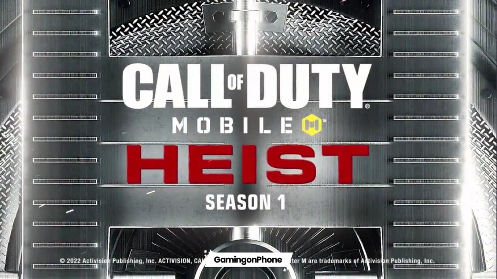
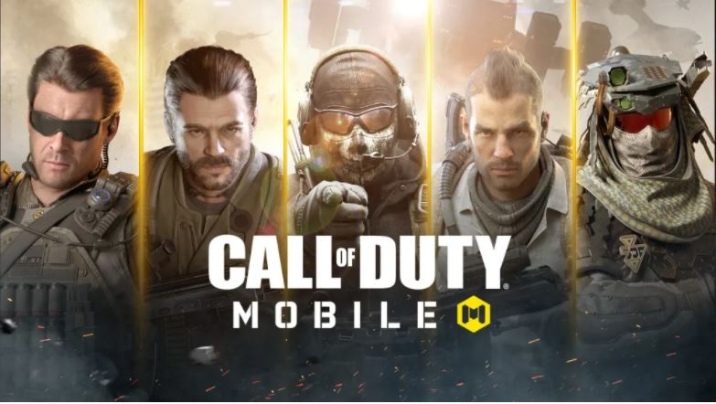
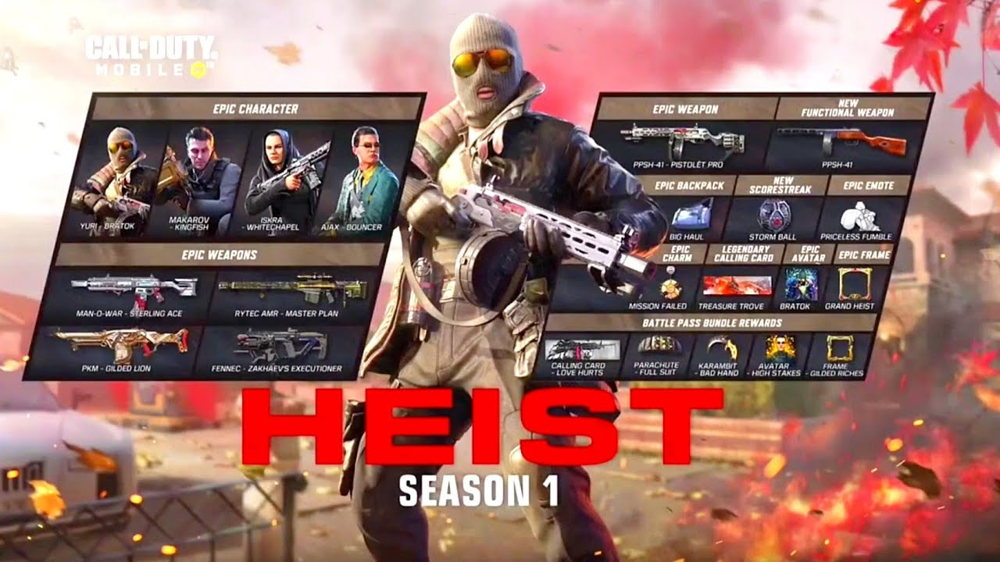
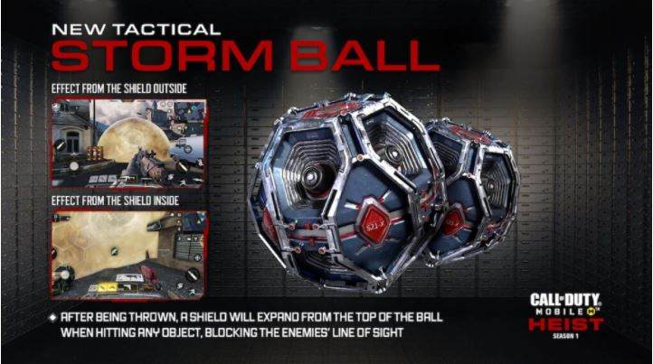
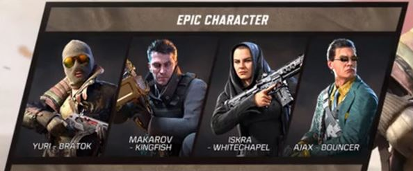
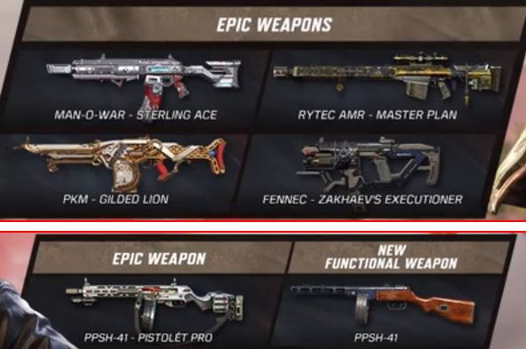
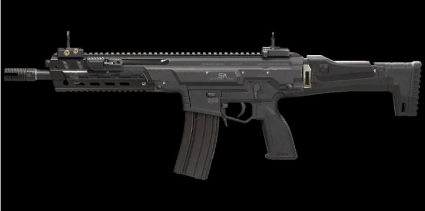
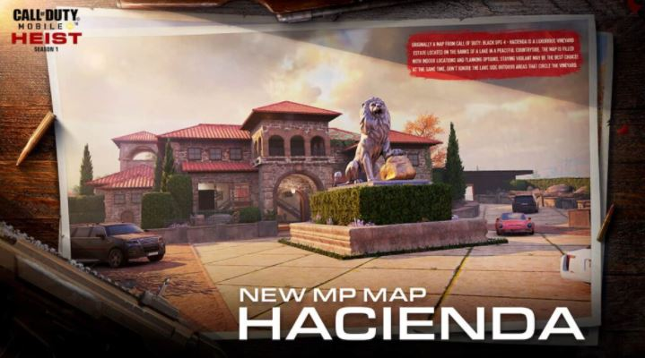

COD Mobile Season 1: Heist
  Call of Duty Mobile is getting ready to start a new era with the first patch of 2022.
After 12 seasons spanning across 2021, it’s time for a new beginning with the COD Mobile Season 1: Heist update in 2022.
Activision has already announced that the next season won’t be called Season 12. Instead, it will be simply named Season 1: Heist.
As explained by developers, this name refresh will apply to all seasons and Ranked Series going forward in 2022. So without further ado,
let’s go over the details to look forward to with this major holiday update.
During Season 1 2022, players will have the opportunity to earn 50 new tiers of Battle Pass rewards.
The Heist update includes a fresh supply of free and premium content,
including new operators such as Yuri-Bratok and Makarov-Kingfish, the new functional weapon – the PPSH-41,
a new scorestreak, Weapon Blueprints, Calling Cards, Charms, COD Points (CP), and more launching throughout the season.
Season 1 2022 is packed with horror-themed content in a brand-new Battle Pass, including free and premium items like new Operators, a new functional weapon, Weapon Blueprints, Calling Cards, Charms, Call of Duty Points, and more.
COD Mobile Season 11 2021 Battle Pass ends on Thursday, January 20th, 2022.
The new Battle Pass will be available from January 21st, 2022 at 8 AM PDT (tentative) alongside the rest of the update.
This battle pass, just like the previous battle passes will consist of four epic characters and some epic weapons.
BATTLE PASS
PREMIUM BATTLE PASS TIER

NEW EPIC CHARACTERS: Yuri-Bratok, Makarov-Kingfish, Isa-Whitechapel, Ajax-Bouncer
EPIC WEAPON BLUEPRINTS: Man-o-War: Sterling Ace, Rytec AMR-Master Plan, PKM-Gilded Lion, Fennec-Zakhaev’s Executioner, PPSH-41: Pistolet Pro
OTHER REWARDS: Calling Card – Love Hurts, Karambit-Bad Hand, Avatar – High Stakes, Frame – Gilded Riches, Parachute – Full Suit
Free Battle Pass Tiers
FREE BATTLE PASS TIER

New Scorestreak- STORMBALL
A new Scorestreak named Storm Ball will now be playable in the COD Mobile Season 1 2022.
The Storm Ball is a new tactical grenade that functions as a smoke grenade but deploys a shroud of smoke that makes it hard to see anything inside,
but players can see just fine inside the hemisphere of smoke.
EPIC CHARACTERS AND EPIC WEAPONS


NEW WEAPONS

KILO 141
KILO 141
Kilo 141 is one of the several fully-automatic assault rifles with a longer optic to bolster head-shot effectiveness.
This weapon gives a modest damage output with an average firing rate and convertible drum magazines.
PPSH-41
PPSh-41 is a low-precision SMG with a large drum magazine. Take advantage of this weapon’s hip firing advantage to charge into your enemies!
NEW MAPS

HACIENDA
This one is yet another visually pleasing map set in a large vineyard in Spain. It was first introduced in Call of Duty Black OPS 4.
It is quite a large map that shares the swimming feature with Icebreaker. This luxurious vineyard estate is located alongside the riverbanks.
While the lake seems peaceful, enemies may emerge from the water.
It is critical to cautiously plan out your strategy before you take action!
NUKETOWN TEMPLE
A Nuketown reskin, this map is set in the night and might be one of the most beautiful looking Nuketown renditions we’ve seen in a while with cool-looking lanterns and neon signs lighting up everything.
Patrol under red lanterns, and take a tour around the traditional Chinese buildings, Nuketown Temple is the perfect place to visit in this festive season.
While you have fun, don’t miss the fireworks show at night!